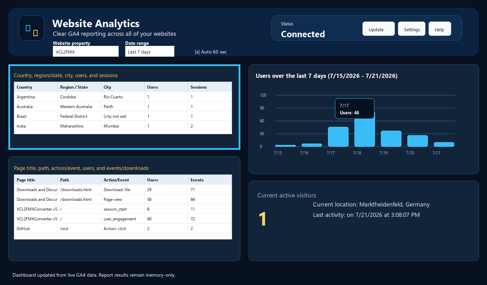

Visitor Locations

What the location grid shows
- The upper-left grid shows Country, Region/State, City, Users, and Sessions.
- Rows are sorted alphabetically for easier scanning.
- US visitors appear with city and state. International visitors appear with city, country, and region when GA4 supplies it.
Not set values
GA4 sometimes returns not set for country, region, or city. Those rows are displayed because they are actual GA4 results, not dashboard errors.